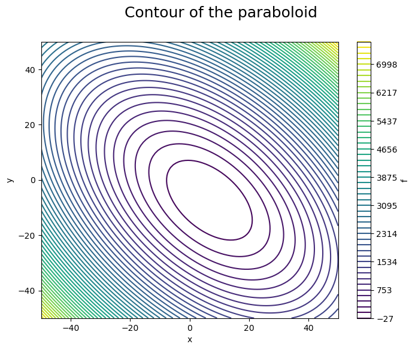

Paraboloid example
import numpy as np
import matplotlib.pyplot as plt
x = np.linspace(-50, 50, 100)
y = np.linspace(-50, 50, 100)
XX, YY = np.meshgrid(x, y)
ZZ = (XX - 3)**2 + XX * YY + (YY + 4)**2 - 3
plt.figure(figsize=(8, 6))
plt.contour(XX, YY, ZZ, levels=np.linspace(np.min(ZZ), np.max(ZZ), 50))
plt.xlabel('x')
plt.ylabel('y')
plt.colorbar(label='f')
plt.suptitle('Contour of the paraboloid', fontsize=18);
